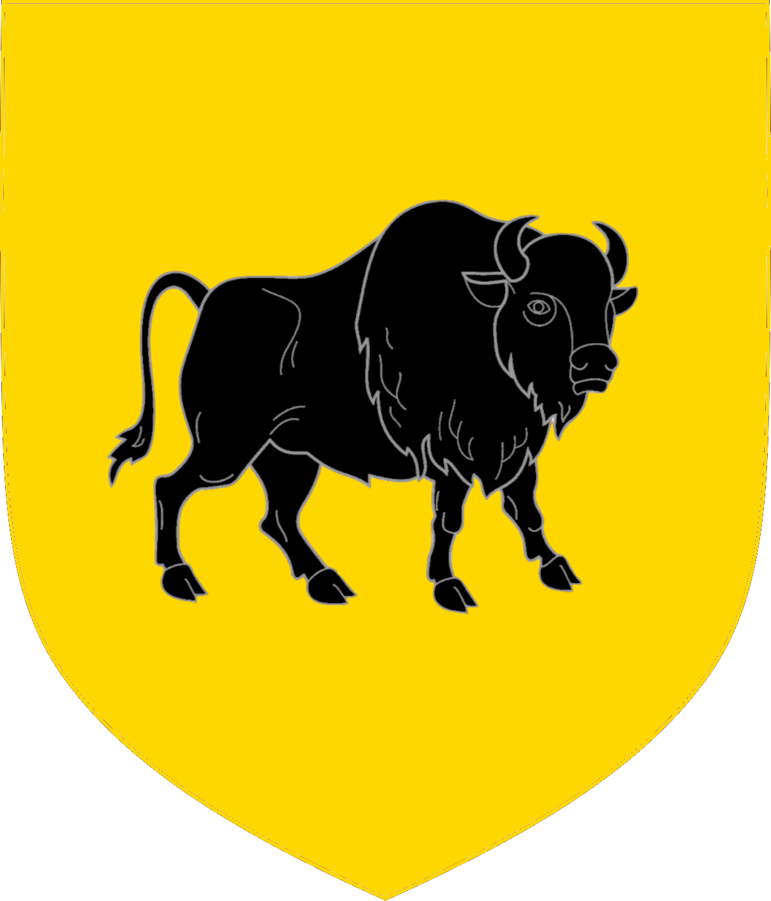
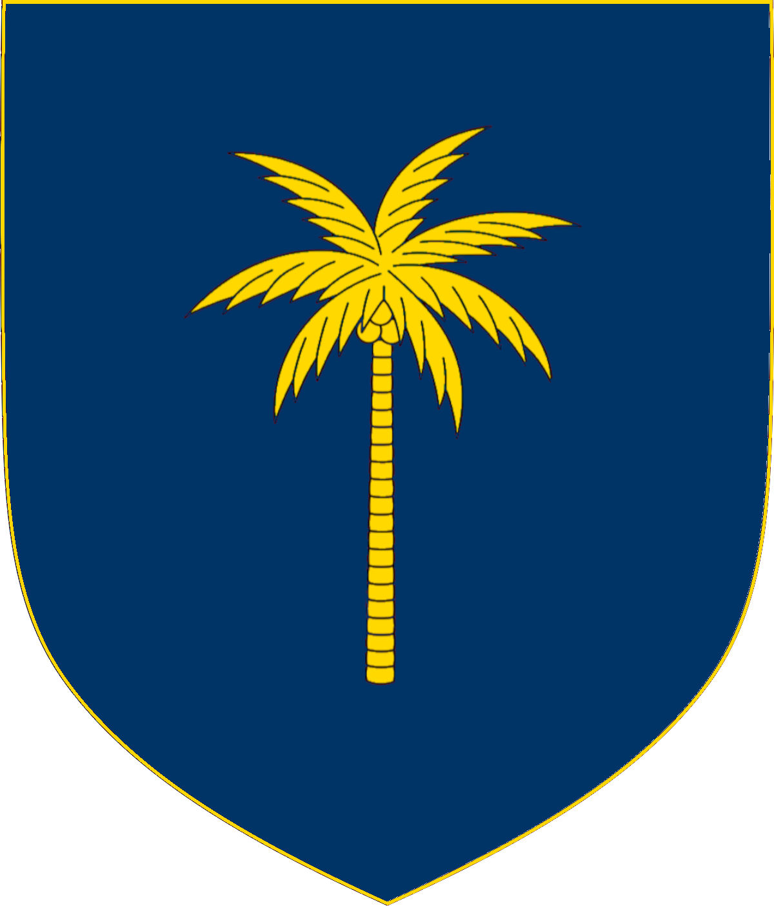
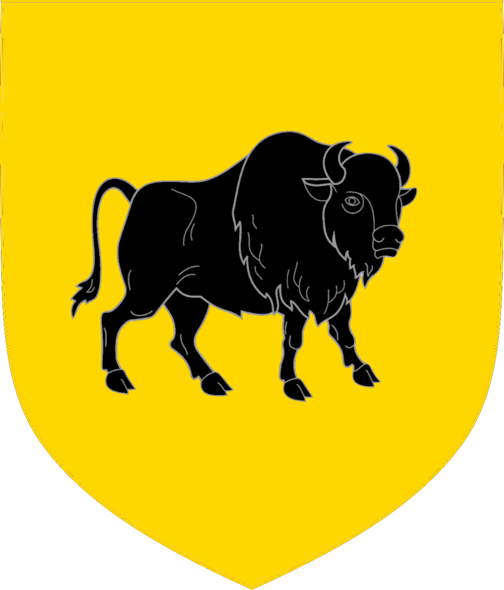
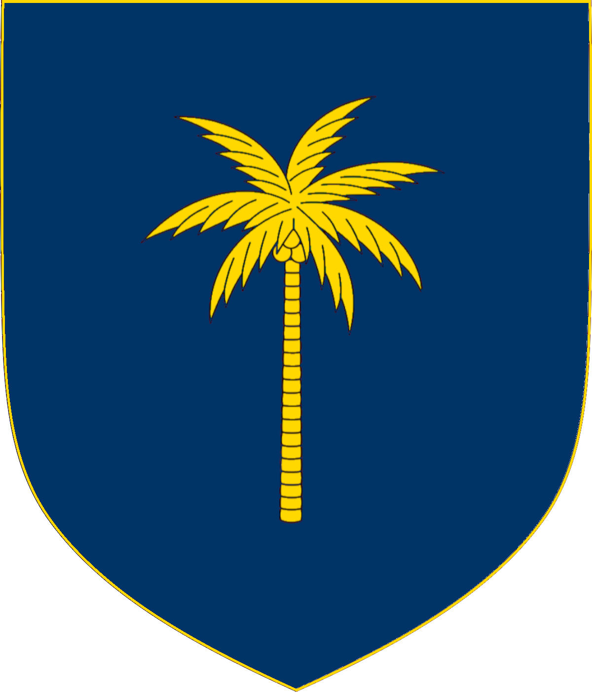
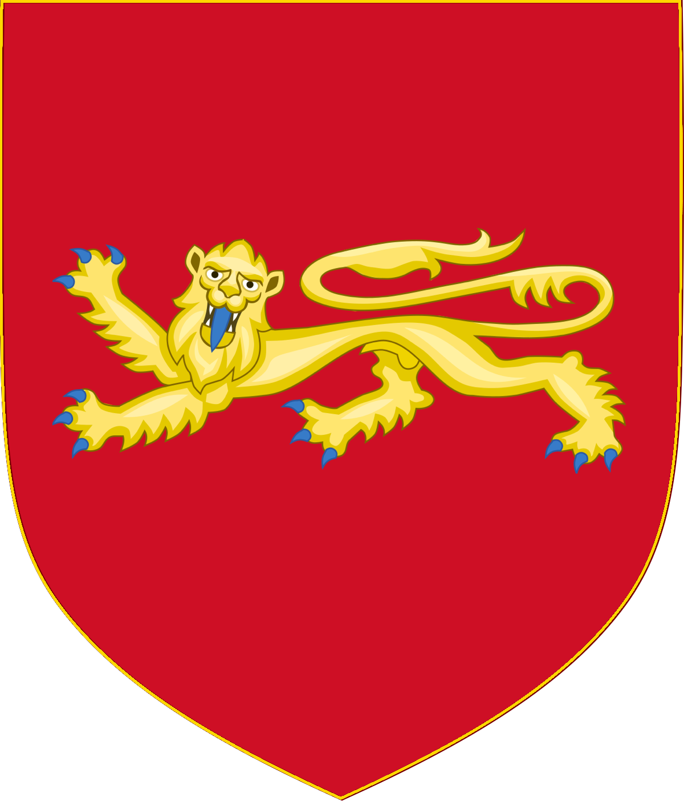
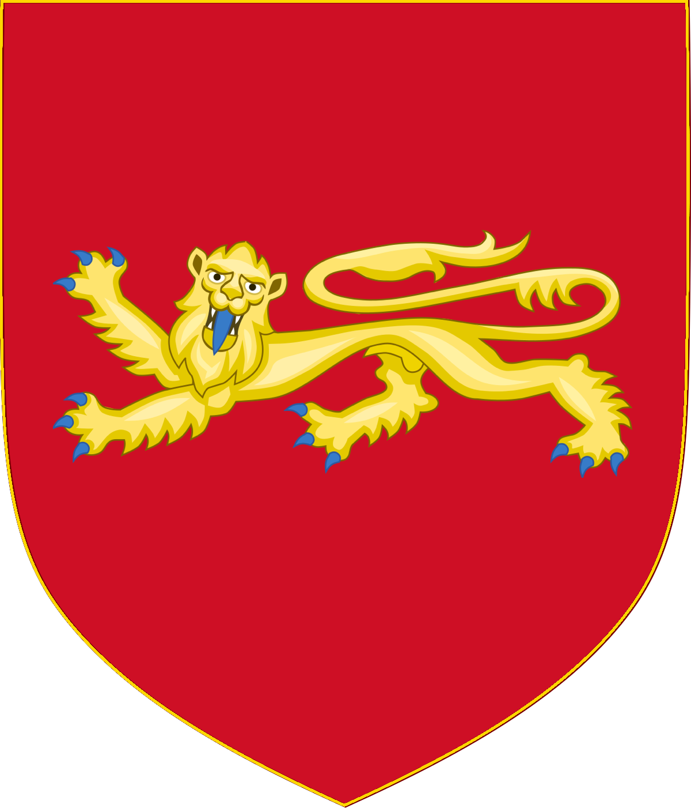

 

Click on any shield to learn about the tribe.
What is the Tribal Confederacy?
We are a religio-political organization that seeks to reconstitute America as a confederation of Twelve sovereign nations, bound by the Christian faith and kinship.